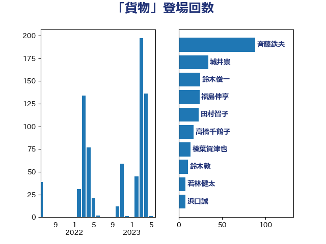

単語「貨物」

| 赤羽一嘉 | 公明党 | 25 回 |
| 城井崇 | 立憲民主党 | 18 回 |
| 榛葉賀津也 | 国民民主党 | 18 回 |
| 鈴木俊一 | 自由民主党 | 15 回 |
| 斉藤鉄夫 | 公明党 | 13 回 |
| 稲津久 | 公明党 | 13 回 |
| 梶山弘志 | 自由民主党 | 12 回 |
| 高橋千鶴子 | 日本共産党 | 12 回 |
| 中西健治 | 自由民主党 | 8 回 |
| 萩生田光一 | 自由民主党 | 7 回 |
| 大家敏志 | 自由民主党 | 6 回 |
| 福島伸享 | 無所属 | 6 回 |
| 岡本三成 | 公明党 | 5 回 |
| 岸田文雄 | 自由民主党 | 5 回 |
| 渡辺周 | 立憲民主党 | 5 回 |
| 麻生太郎 | 自由民主党 | 5 回 |
| 中川郁子 | 自由民主党 | 4 回 |
| 井上英孝 | 日本維新の会 | 4 回 |
| 石川大我 | 立憲民主党 | 4 回 |
| 西銘恒三郎 | 自由民主党 | 4 回 |
| 野上浩太郎 | 自由民主党 | 4 回 |
| 青木愛 | 立憲民主党 | 4 回 |
| おおつき紅葉 | 立憲民主党 | 3 回 |
| 室井邦彦 | 日本維新の会 | 3 回 |
| 小林鷹之 | 自由民主党 | 3 回 |
| 岩田和親 | 自由民主党 | 3 回 |
| 市村浩一郎 | 日本維新の会 | 3 回 |
| 渡辺猛之 | 自由民主党 | 3 回 |
| 石井拓 | 自由民主党 | 3 回 |
| 笠井亮 | 日本共産党 | 3 回 |
| 美延映夫 | 日本維新の会 | 3 回 |
| 足立敏之 | 自由民主党 | 3 回 |
| 道下大樹 | 立憲民主党 | 3 回 |
| 伊波洋一 | 無所属 | 2 回 |
| 伊藤渉 | 公明党 | 2 回 |
| 佐藤正久 | 自由民主党 | 2 回 |
| 古川元久 | 国民民主党 | 2 回 |
| 和田義明 | 自由民主党 | 2 回 |
| 國重徹 | 公明党 | 2 回 |
| 山東昭子 | 自由民主党 | 2 回 |
| 岩渕友 | 日本共産党 | 2 回 |
| 林芳正 | 自由民主党 | 2 回 |
| 森屋隆 | 立憲民主党 | 2 回 |
| 森田俊和 | 立憲民主党 | 2 回 |
| 浜口誠 | 国民民主党 | 2 回 |
| 深澤陽一 | 自由民主党 | 2 回 |
| 熊谷裕人 | 立憲民主党 | 2 回 |
| 玉木雄一郎 | 国民民主党 | 2 回 |
| 白石洋一 | 立憲民主党 | 2 回 |
| 石井章 | 日本維新の会 | 2 回 |
| 藤巻健太 | 日本維新の会 | 2 回 |
| 西村康稔 | 自由民主党 | 2 回 |
| 野田国義 | 立憲民主党 | 2 回 |
| 鈴木敦 | 国民民主党 | 2 回 |
| 中村裕之 | 自由民主党 | 1 回 |
| 前原誠司 | 国民民主党 | 1 回 |
| 古川直季 | 自由民主党 | 1 回 |
| 和田政宗 | 自由民主党 | 1 回 |
| 安江伸夫 | 公明党 | 1 回 |
| 安達澄 | 無所属 | 1 回 |
| 小島敏文 | 自由民主党 | 1 回 |
| 小沼巧 | 立憲民主党 | 1 回 |
| 小西洋之 | 立憲民主党 | 1 回 |
| 山口壯 | 自由民主党 | 1 回 |
| 山岡達丸 | 立憲民主党 | 1 回 |
| 岩本剛人 | 自由民主党 | 1 回 |
| 平木大作 | 公明党 | 1 回 |
| 後藤茂之 | 自由民主党 | 1 回 |
| 末松義規 | 立憲民主党 | 1 回 |
| 本田太郎 | 自由民主党 | 1 回 |
| 櫻井周 | 立憲民主党 | 1 回 |
| 武井俊輔 | 自由民主党 | 1 回 |
| 河西宏一 | 公明党 | 1 回 |
| 泉田裕彦 | 自由民主党 | 1 回 |
| 清水貴之 | 日本維新の会 | 1 回 |
| 漆間譲司 | 日本維新の会 | 1 回 |
| 牧山ひろえ | 立憲民主党 | 1 回 |
| 田村貴昭 | 日本共産党 | 1 回 |
| 盛山正仁 | 自由民主党 | 1 回 |
| 石原正敬 | 自由民主党 | 1 回 |
| 石川博崇 | 公明党 | 1 回 |
| 礒崎哲史 | 国民民主党 | 1 回 |
| 竹内真二 | 公明党 | 1 回 |
| 篠原孝 | 立憲民主党 | 1 回 |
| 細田健一 | 自由民主党 | 1 回 |
| 船橋利実 | 自由民主党 | 1 回 |
| 芳賀道也 | 国民民主党 | 1 回 |
| 茂木敏充 | 自由民主党 | 1 回 |
| 薗浦健太郎 | 自由民主党 | 1 回 |
| 西岡秀子 | 国民民主党 | 1 回 |
| 西野太亮 | 自由民主党 | 1 回 |
| 野田聖子 | 自由民主党 | 1 回 |
| 鈴木憲和 | 自由民主党 | 1 回 |
| 長浜博行 | 無所属 | 1 回 |
| 阿部司 | 日本維新の会 | 1 回 |